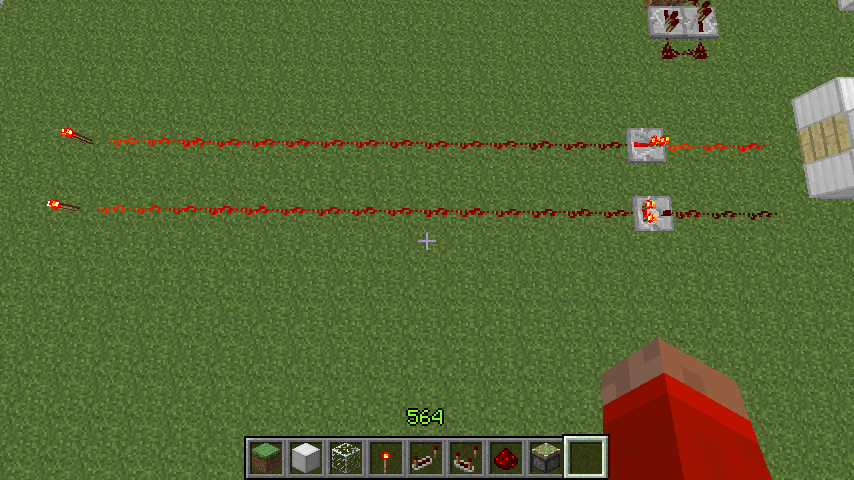
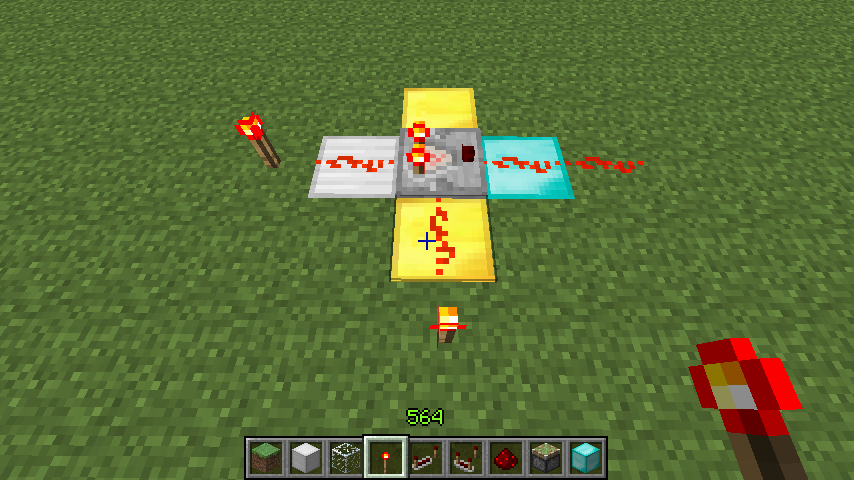
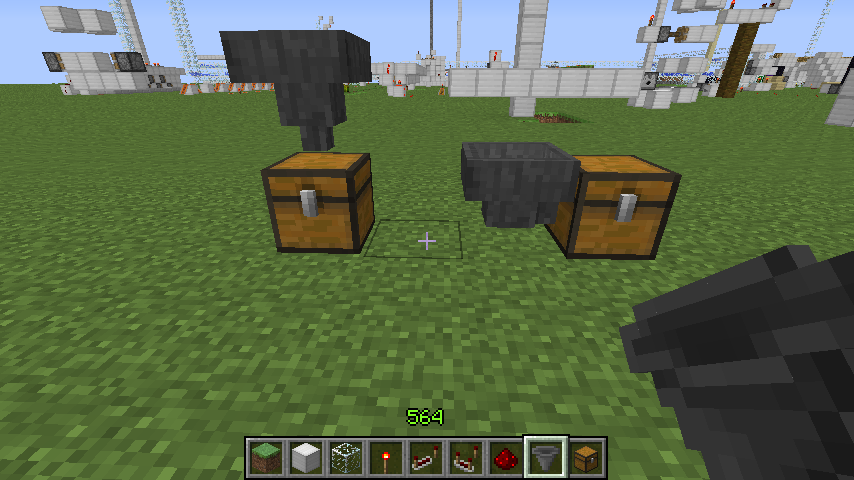

首页
上一页
190
191
192
193
194
195
195
196
197
198
199
200
下一页
末页
defanive2
无尽黑夜
14
但是quartz柱的放置是可以有方向性的
如图，柱面可以面向其他方向
——来自 MCLive
13678楼
2013-03-17 15:17
defanive2
无尽黑夜
14
quartz台阶，和quartz块纹理基本相同
——来自 MCLive
13679楼
2013-03-17 15:18
defanive2
无尽黑夜
14
四种quartz的方块一览
这些方块是很不错的更新之一
可以作为很多种装饰性目的
纹理非常漂亮，可以模拟大理石或者瓷砖的材质
总之建筑党在选材的时候又多一个选择了
PS 开采难度也不大
即使在生存里也可以很容易获得
——来自 MCLive
13681楼
2013-03-17 15:20
defanive2
无尽黑夜
14
而这个也是另外一个nether方面的更新
个人也比较喜欢
——来自 MCLive
13683楼
2013-03-17 15:21
defanive2
无尽黑夜
14
在炉子里面加热地狱岩可以得到地狱砖块
4个地狱砖块可以合成地狱砖
如果喜欢地狱砖的同学获得地狱砖就方便很多了
同时也不会破坏地狱堡垒
——来自 MCLive
13684楼
2013-03-17 15:23
defanive2
无尽黑夜
14
而6个地狱砖可以合成地狱围栏
——来自 MCLive
13685楼
2013-03-17 15:24
defanive2
无尽黑夜
14
而地狱围栏除了可以作为装饰性材料
也可以和普通围栏混用
这样可以创造出一条在2格间的通道
——来自 MCLive
13689楼
2013-03-17 15:26
defanive2
无尽黑夜
14
这种通道有什么用呢
在旧版，没有绊线的时候
这样的通道经常用在各种怪物摔死处理装置上
可以做到探测摔死区间是否有怪物通过的作用
——来自 MCLive
13690楼
2013-03-17 15:28
defanive2
无尽黑夜
14
接下来就到了1.5更新最核心的部分了
1.5毕竟是命名为红石更新，自然红石是少不了的
如图可以合成comparator，比较器
PS mojang设计成需要quartz作为合成材料
其实也是在鼓励玩家探索地图
——来自 MCLive
13691楼
2013-03-17 15:33
defanive2
无尽黑夜
14
comparator的样子其实长得非常像中继器
尤其像中继器被锁时候的样子
——来自 MCLive
13692楼
2013-03-17 15:35
defanive2
无尽黑夜
14
而comparator最寂寞的功能估计就是加强电路信号了
这个是非常次要的功能
中继器会把信号重设到最强点
而comparator只会把信号原强度重新输出
不过值得指出的是，中继器最短会有1tick的延迟
而comparator只有1个game tick的延迟
也就是0.5tick的延迟
可以用此减少电路的延迟
——来自 MCLive

13693楼
2013-03-17 15:39
defanive2
无尽黑夜
14
而comparator，比较器
的主要功能自然是“比较”了
比较器有两个输入端和一个输出端
铁块是第一输入端，2金块是第二输入端
钻石块是输出端
——来自 MCLive
13694楼
2013-03-17 15:42
defanive2
无尽黑夜
14
而比较器的作用就是，比较铁块和金块输入端的信号强度
如果铁块的信号强度大，那么在钻石块输出铁块强度，否则不输出
信号强度最高是15，大部分信号源都搜直接提供15的信号
信号强度会随着在红石线中的传播距离递减
因此在途中，铁块端的信号强度是15
金块端的信号强度是13
15>13，因此就输出了强度为15的信号
——来自 MCLive
13696楼
2013-03-17 15:45
defanive2
无尽黑夜
14
而在此图中，铁块端强度为14
金块端强度为15
14<15，因此输出0
——来自 MCLive
13697楼
2013-03-17 15:46
defanive2
无尽黑夜
14
信号强度相同也会输出
——来自 MCLive

13698楼
2013-03-17 15:47
defanive2
无尽黑夜
14
2个金块端的强度都要同时比铁块端的强度小或者相等才会输出
——来自 MCLive
13699楼
2013-03-17 15:48
defanive2
无尽黑夜
14
总结的情况来说就是
if(iron>=gold1&&iron>=gold2)
{
return iron;
}else{
return 0;
}
——来自 MCLive
13701楼
2013-03-17 15:49
defanive2
无尽黑夜
14
而比较器还有另外一个模式
右击比较器会点亮钻石端的火炬，代表进入了“减法”模式
将会输出铁端和金端的信号强度差
PS 这个功能有多逆天我就不解释了
——来自 MCLive
13702楼
2013-03-17 15:52
defanive2
无尽黑夜
14
同样的，两个金端的信号都会进行比较
输出较小的结果
——来自 MCLive
13703楼
2013-03-17 15:55
defanive2
无尽黑夜
14
1.5的红石更新把电路信号强度的概念带入之后
加上比较器的高能功能
各种装置都会非常的碉堡 = =
——来自 MCLive
13705楼
2013-03-17 15:56
defanive2
无尽黑夜
14
而比较器另外一个很重要的功能就是获得各种容器的饱满程度
容器可以是箱子、熔炉、炼药台等等
根据箱子里面物品的多少，会产生不同强度的信号
——来自 MCLive
13706楼
2013-03-17 16:02
defanive2
无尽黑夜
14
好吧，刚刚蛋疼了一下，继续直播
接下来估计就是整个1.5更新最重要的部分了
hopper，貌似翻译成漏斗
合成方式也比较简单，不过消耗挺多的铁
PS 各种红石相关装置的铁消耗量
活塞：1
发射器+水桶：3
铁路：6/16
铁门：6
铁栅栏：6/16
漏斗：5
相对来说，漏斗消耗的铁资源非常大
——来自 MCLive
13713楼
2013-03-17 16:25
defanive2
无尽黑夜
14
漏斗放置后的样子
主要由3个部分组成
上端是接受端，中间是储存，下端是输出端
——来自 MCLive
13714楼
2013-03-17 16:26
defanive2
无尽黑夜
14
对着一个方块面放置漏斗的话
可以把输出端朝向所对的面
——来自 MCLive
13715楼
2013-03-17 16:27
defanive2
无尽黑夜
14
右键可以打开漏斗的储存GUI
漏斗自带5个储存格子
——来自 MCLive
13717楼
2013-03-17 16:27
defanive2
无尽黑夜
14
漏斗有什么用呢
漏斗其实就是作为收集物品的装置
经过漏斗上方的物品，如果漏斗仍然有储存空间就会拾起物品
把物品放置到漏斗的储存空间里面
——来自 MCLive
13718楼
2013-03-17 16:29
defanive2
无尽黑夜
14
上图扔进去的钻石就被拾起，存储到了漏斗的储存空间里面
——来自 MCLive
13719楼
2013-03-17 16:31
defanive2
无尽黑夜
14
而漏斗的尾端则是输出端
漏斗会把自己储存室里面的物品转移到输出端的容器里面
例如在图中，往漏斗扔物品，那么物品最终就会进入到箱子里面
——来自 MCLive

13720楼
2013-03-17 16:33
defanive2
无尽黑夜
14
漏斗的价值自然马上就显示出来了
可以把漏斗作为收集装置
例如做在刷怪塔，农场等等的尾端
将物品收集到一起
——来自 MCLive
13721楼
2013-03-17 16:34
defanive2
无尽黑夜
14
乍看之下似乎漏斗也只有这个功能了，其实不然
如果提前把漏斗的储藏室如图填好，会怎么样呢？
——来自 MCLive
13722楼
2013-03-17 16:37
首页
上一页
190
191
192
193
194
195
195
196
197
198
199
200
下一页
末页